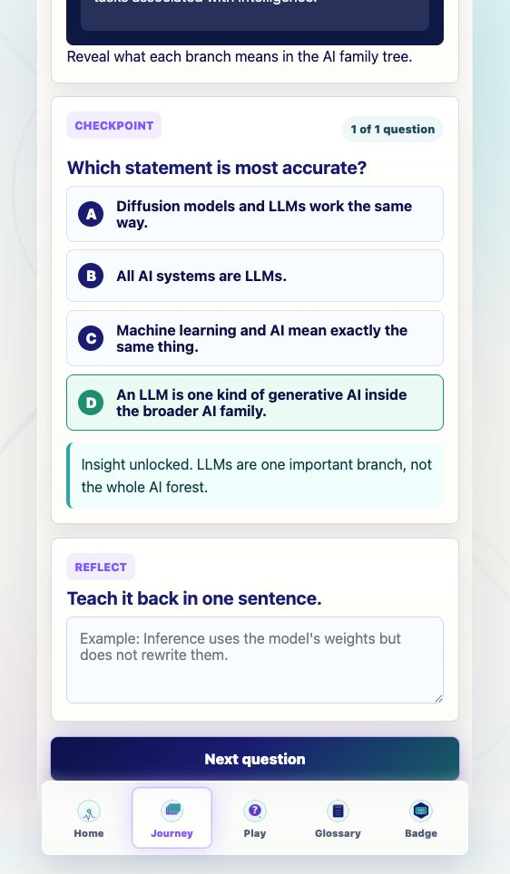

Prompt Life v0.27.4
Checkpoint Progress Label Pass
This small Journey polish pass adds a question-count indicator to every lesson checkpoint and changes the post-checkpoint action label from Next lesson to Next question.
What Changed
- Every checkpoint panel now receives a progress object and shows
X of N question(s). - Single-question lessons show
1 of 1 questionat the top right of the checkpoint panel. - The sticky action now says
Next questionafter a correct checkpoint answer, while the final badge action remains unchanged. - The app/package version is now
0.27.4.
Verification
npm run typecheck: passed.npm run build: passed with the existing Vite large-chunk warning.npm run build:pages: passed with the existing Vite large-chunk warning.npm run audit:answers: passed.- Browser QA on Where LLMs Fit confirmed
1 of 1 question,Next question, and no horizontal overflow.
